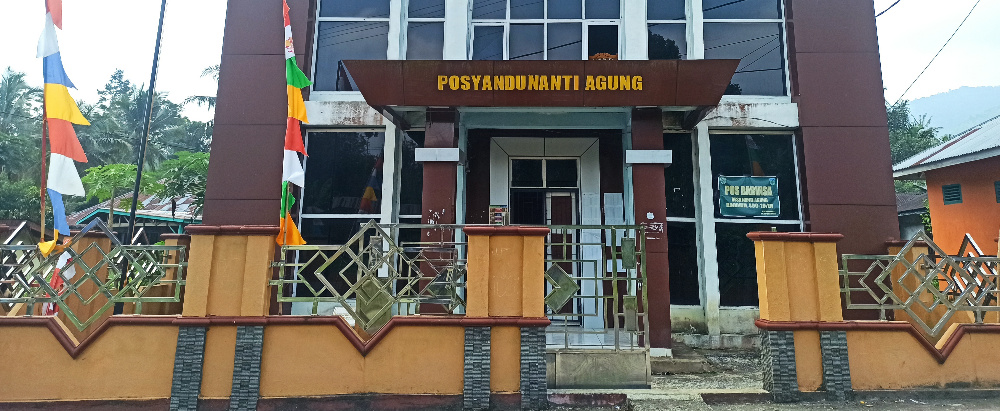
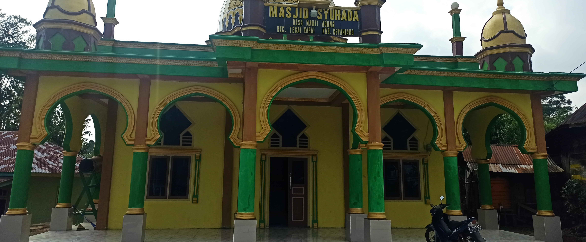

Kantor Desa Nanti Agung
Posyandu dan Balai Desa

Masjid Desa Nanti Agung
Tempat Ibadah di Desa Nanti Agung

MIN 1 Nanti Agung
Tempat Belajar anak-anak di Desa Nanti Agung

Desa Nanti Agung
Gapura Selamat Datang di Desa Nanti Agung